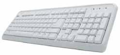
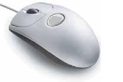
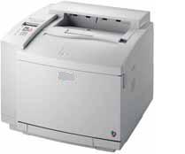
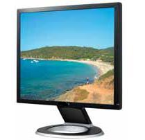
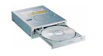
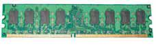
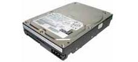
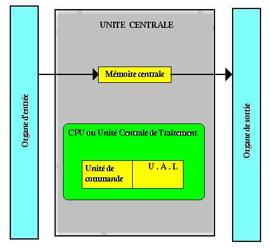
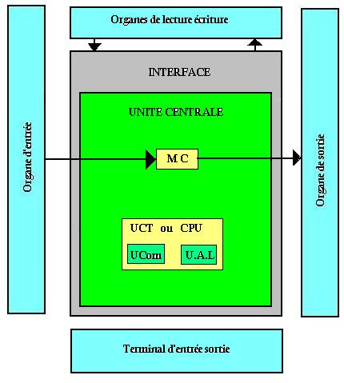
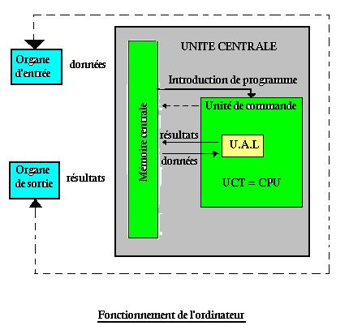

L'ordinateur peut se définir comme une machine, un dispositif électronique commandé par des programmes enregistrés sur une mémoire et composé d'une unité centrale et de périphériques.
En configuration minimale les périphériques d'un ordinateur sont: l'écran ou moniteur, le clavier, la souris, les lecteurs, l'imprimante. Ils sont divisés en trois groupes:
Permettent d'entrer les données dans l'ordinateur. Ce sont le clavier et la souris.

C'est le moyen le plus répandu pour saisir les données dans le domaine de l'ordinateur. C'est une sorte de petit tableau rectangulaire comportant des touches. La plus part des claviers disposent de 102 touches reparties en 5 zones appelées zones de touches. Les touches de frappe:
Les touches d'ordinateur:
Les touches de déplacement:
Le paver numérique.
Les claviers les plus rependus sont les claviers Français (AZERTY) et les claviers Anglais (QWERTY).

La souris est un boîtier qu'on déplace manuellement sur un tapis et grâce auquel on dirige le curseur à l'endroit précis où on le désire. La souris facilite le travail et est source considérable de gain de temps.
En configuration minimale le périphérique de sortie est l'imprimante. Les périphériques de sortie transmettent à l'intérieur sous forme compréhensible par l'utilisateur les résultats recueillis par la mémoire centrale. Il existe plusieurs types d'imprimante parmi les plus courants nous avons les imprimantes matricielles à aiguille qui imprime caractère par caractère, les imprimantes sans impact et les imprimantes qui impriment ligne par ligne (imprimante à jet d'encre ou page par page, imprimante laser). Ces derniers existent aussi en version couleur.

Ils permettent d'entrer les informations dans l'ordinateur et d'en recevoir. Ce sont l'écran et le lecteur.

C'est un périphérique d'affichage, il est semblable à un téléviseur sans réception mais la qualité de l'image est meilleure.

Ce sont les unités de lecture, d'écriture sur les supports magnétiques que sont les disques durs fixes ou amovibles, les disquettes, les disques optiques compact ou CDROM, les bandes(bandes à cassette, bande à cartouche).
Les disquettes sont des supports magnétiques souples protégés par une enveloppe.
Les disques durs sont des unités de stockage rapide et de très grande capacité pouvant enregistrer et restituer plusieurs centaines de million de caractère.
L'unité centrale est la pièce maîtresse de l'ordinateur. Son élément constitutif principal est la carte mère sur laquelle sont connectés tous les autres éléments:
Le processeur est à la base de tous les calcules, c'est le cerveau de l'ordinateur. Il est caractérisé par sa marque (Intel 486; Intel Pentium) et sa fréquence d'horloge caractérise grossièrement le nombre d'opération que peut effectuer en une seconde. Le processeur encore noté C.P.U (Central Processing Unit) ou U.C.T coordonne le reste des éléments et exécute les instructions qui ont été programmées. Il est constitué d'un ou de plusieurs microprocesseurs. Les éléments principaux d'un microprocesseur sont:
Il y'a d'autres éléments tels que le compteur ordinal et le registre. Ces différentes parties sont reliées en elles et aux organes extérieurs par des bus.
Elle est constituée d'un ensemble de circuit qui décompose l'instruction à traiter en une suite de micro instructions et qui synchronise l'exécution de ce micro instruction selon une cadence fixée par les impulsions d'une horloge.
Encore appelé A.L.U (Arithmetic and Logical Unit), elle est sollicitée par l'unité de commande lorsqu'il s'agit d'effectuer les opérations. Elle se compose:
Ce sont de petites mémoires spécialisées d'accès excessivement rapides qui permettent de stocker temporairement des instructions, exemple: des registres d'adresse: contient successivement l'adresse des instructions à exécuter et l'adresse des données correspondantes.
Aussi appelé compteur de programme, c'est un registre qui contient l'adresse de la prochaine instruction à exécuter dans le programme.
Deux types de mémoire: la mémoire vive et la mémoire morte.
Généralement appelé RAM (Ramdom Access Memory): mémoire à accès aléatoire, c'est-à-dire que l'on peut accéder instantanément à n'importa qu'elle partie de la mémoire. C'est la mémoire principale du système. Elle permet de stocker temporairement des données lors de l'exécution d'un programme, c'est-à-dire à chaque fois que l'ordinateur est mise hors tension toutes les données prises sur cette mémoire son irrémédiablement effacées. C'est pourquoi on dit que c'est une mémoire volatile. Elle contient cependant certains programmes servant à la gestion de l'ordinateur.

Généralement appelée ROM (Read Only Memory) est une mémoire de lecture uniquement, ne s'efface pas lors de la mise hors tension du système. C'est pourquoi elle est appelée mémoire non volatile ou mémoire rémanente.

C'est une mémoire auxiliaire (par rapport à la mémoire principale). C'est l'organe du PC (Persona Computer) servant à conserver les données de manière permanente, en Anglais hard disk. Il est constitué de plusieurs disques rigides en métal en verre ou en céramique et capable d'enregistrer et restituer plusieurs millions de caractères

Ce sont les buis, ils servent à transporter les signaux sous forme de signal électrique, on distingue: les bus de données sur lesquels circulent les instructions à exécuter, les données à traiter et les résultats obtenus, il est bidirectionnel.
Sur un PC, on peut connecter des périphériques internes. Il s'agit principalement de:

